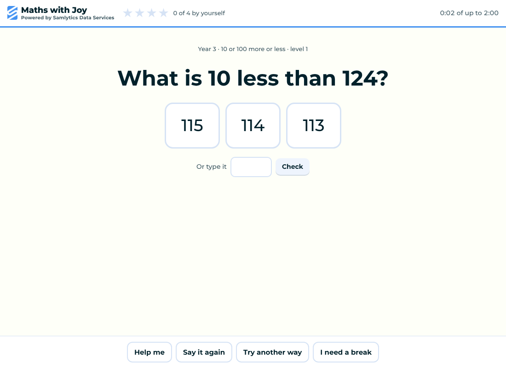
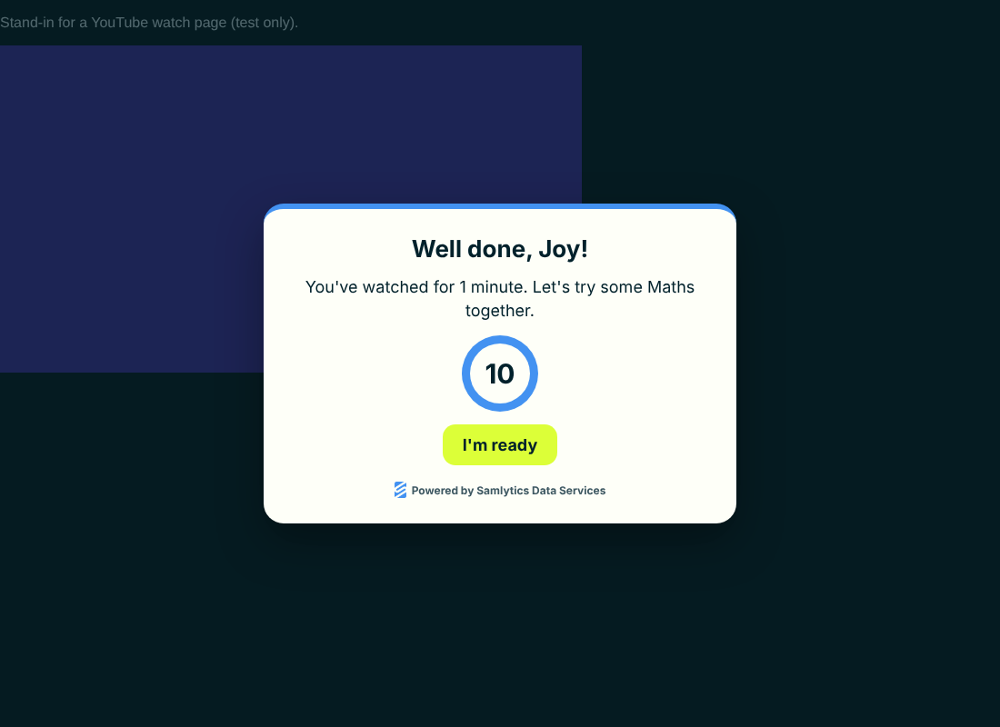
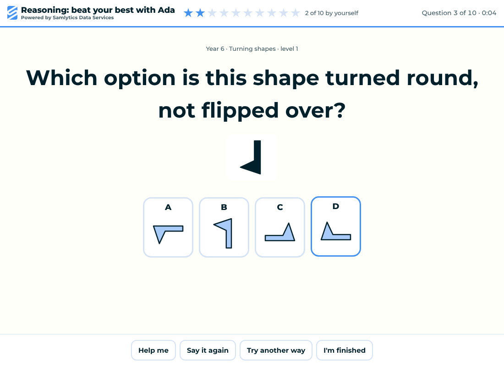
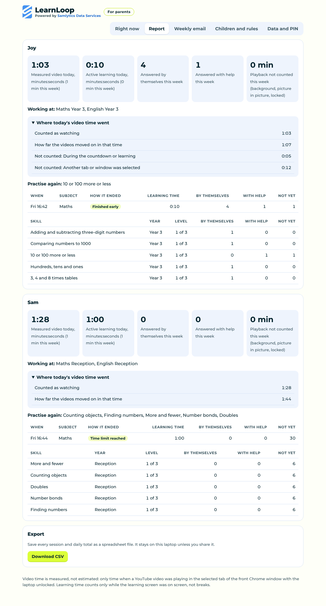
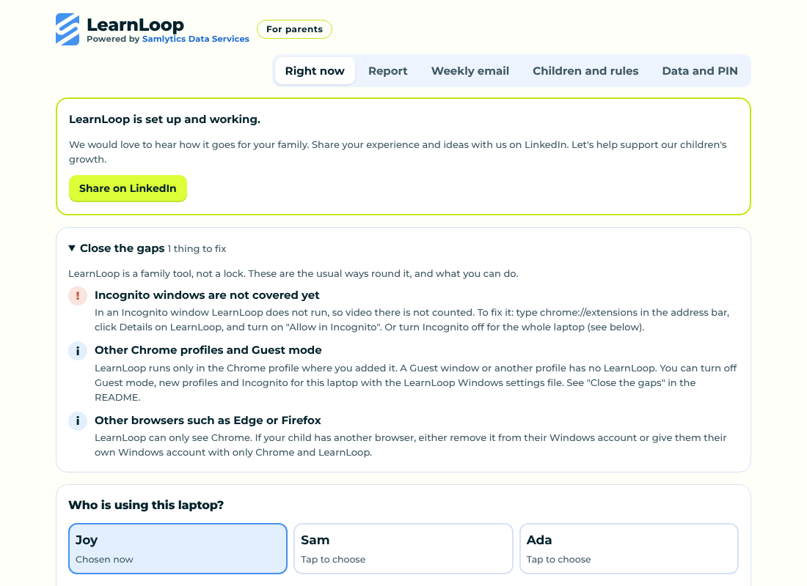

Your children watch, then they learn, then they watch again.
LearnLoop is a free Chrome extension for families. After the YouTube time you choose, it opens a short Maths, English or 11+ reasoning session that follows the national curriculum in England. When the learning is done, the video comes back where it stopped.
Free and open source. No account, no adverts, no tracking. The Chrome Web Store listing is on its way. Until then, install from the download in about five minutes.

How it works
Real watching is measured
Time counts only while a video is playing in the front tab with the laptop unlocked. Paused videos and background tabs don't count.
A short, kind session
Children can ask for help, hear the question again, try another way or take a break. Wrong answers get a clue, never a punishment, and the session always ends on time.
Back to the same video
The video waits at the same point. Children can go back early once they show they understand.
Reception to Year 6
Maths and English that follow the national curriculum in England, starting at your child's school year and getting harder as they succeed.
11+ reasoning
Optional verbal and non-verbal reasoning for Years 4 to 6. General practice, not tied to any area or exam board.
You stay in charge
Choose the times, focus on topics, skip others, add this week's school spellings, and see a clear report of what was learnt.
See it




Install on a Windows laptop
- Download LearnLoop, right-click the zip and choose Extract All to a folder that will stay put.
- Open Chrome and go to chrome://extensions. Turn on Developer mode at the top right.
- Click Load unpacked and choose the folder you extracted.
- Choose a parent PIN, write down the recovery code, and add your children.
- Open YouTube and choose who's watching. That's it.
Once LearnLoop is on the Chrome Web Store, installing will be one click on Add to Chrome, and updates will arrive by themselves. The full guide is in the README.
Private by design
Everything stays on your laptop. LearnLoop collects nothing and sends nothing. It never keeps video titles, browsing history, screenshots, keystrokes or voice recordings. Read the privacy policy.
Made by a parent, for parents
LearnLoop started at home, with two children who love YouTube. It is new, so we would love to hear what works for your family and what would make it better. Open an issue on GitHub or message us on LinkedIn.